Vad är Turbo AI?
Turbo AI är ett AI-verktyg som kan omvandla föreläsningar, PDF:er, YouTube-videor och ljudinspelningar till strukturerade anteckningar, flashcards, quiz, sammanfattningar och även podcasts.
Syftet med verktyget är att hjälpa användaren att studera smartare och spara tid. I stället för att manuellt skriva sammanfattningar eller skapa egna repetitionsfrågor kan Turbo AI snabbt skapa material som går att använda inför prov och repetition.
Mitt mål med testet
Jag ville testa hur bra Turbo AI kan omvandla skolmaterial till användbart pluggmaterial. I första testet laddade jag upp tre PDF-filer med instuderingsfrågor och sammanfattningar. Målet var att få fram tre saker:
En tydlig sammanfattning av innehållet.
Frågor och svar för snabb repetition.
Frågor för att testa kunskapen.
Test 1: PDF-filer från kursen
I det första testet använde jag tre PDF-filer från kursen. Filerna handlade om AI och innehöll bland annat instuderingsfrågor och sammanfattningar.
- Jag gick till Turbo AI och loggade in.
- Jag klickade på Upload PDF och laddade upp mina tre PDF-filer.
- Turbo AI bearbetade filerna automatiskt. Det tog ungefär 60 sekunder.
- Jag klickade på Generate Notes, Generate Flashcards och Create Quiz.
Resultat från test 1
Det som var bra
- Mycket tidsbesparande.
- Bra struktur som följde instuderingsfrågorna.
- Flashcards och quiz kändes användbara inför prov.
Det som kunde vara bättre
- Vissa flashcards var lite för enkla.
- Quizfrågorna kunde ibland vara för lika instuderingsfrågorna.
- Vissa formuleringar kändes lite AI-aktiga.
Skärmklipp från test 1
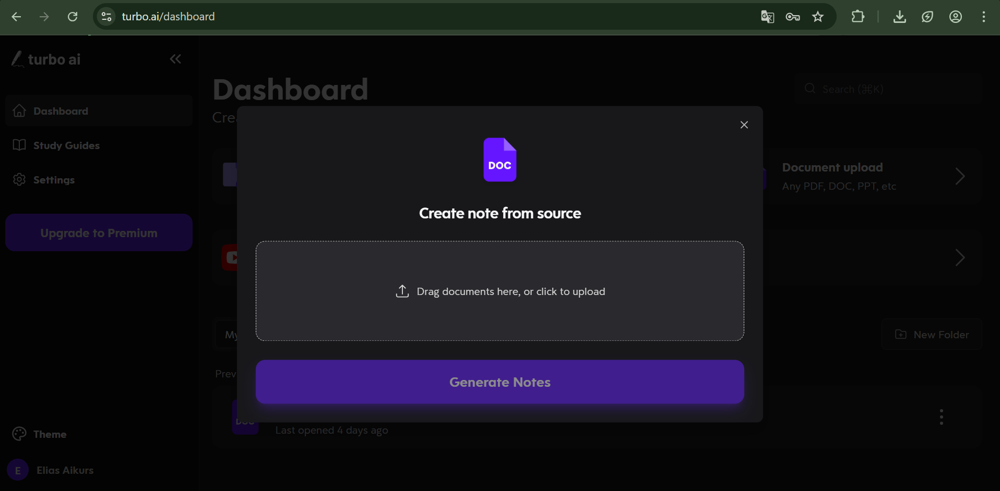
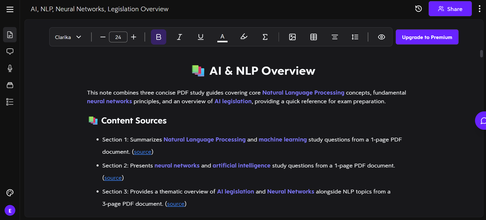
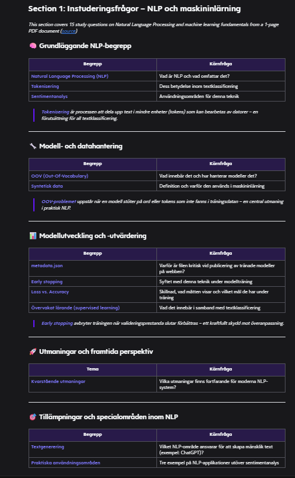
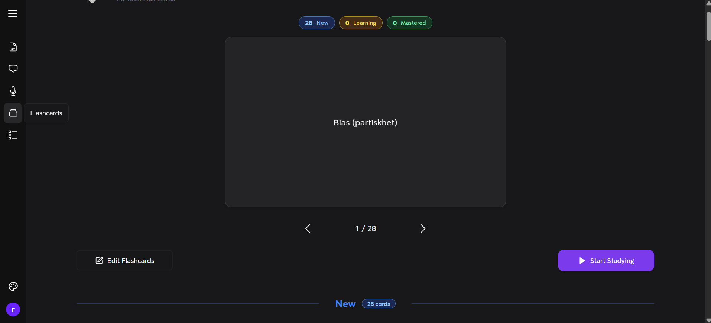
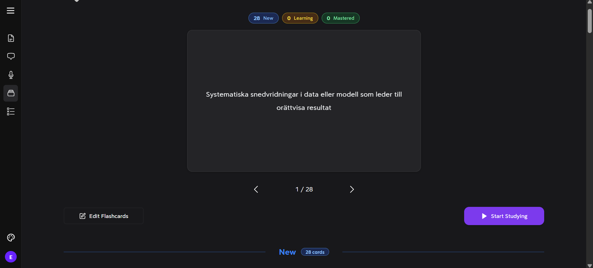
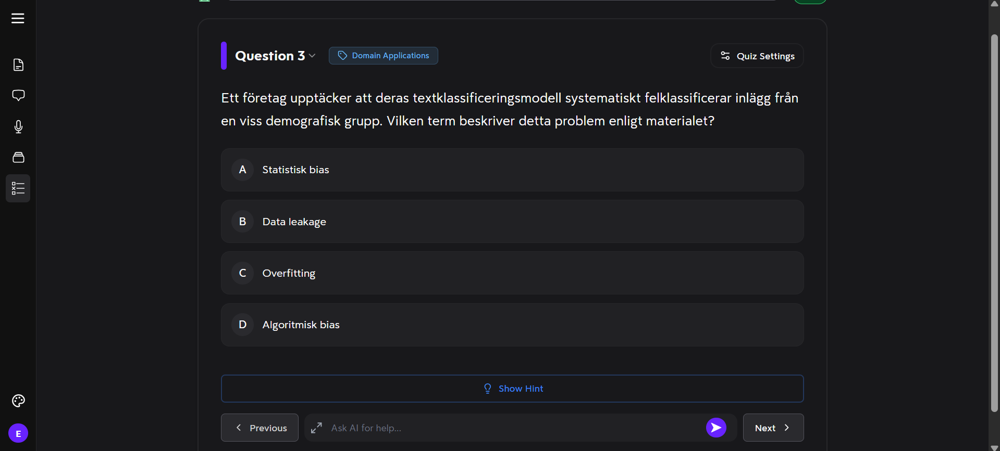
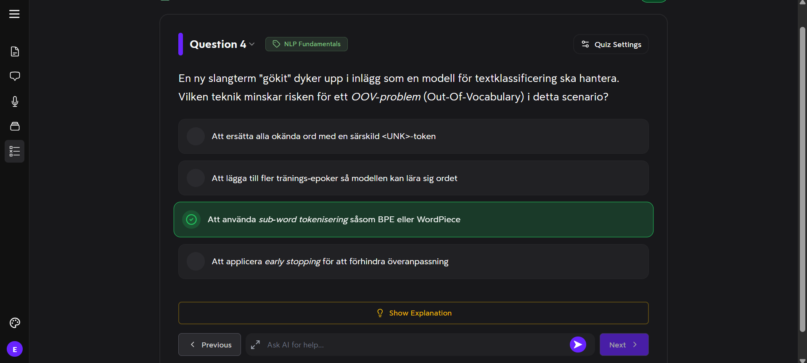
Test 2: YouTube-video om LLM
I det andra testet använde jag en YouTube-video: How Large Language Models Work. Videon handlade om LLM och hur stora språkmodeller fungerar.
Resultat från test 2
Det som var bra
- Snabbt och tidsbesparande även för videomaterial.
- Strukturen följde videon bra.
- Anteckningar, flashcards och quiz var relevanta.
Det som kunde vara bättre
- Flashcardsen blandade svenska och engelska.
- Vissa quizfrågor blev ganska lika varandra.
Skärmklipp från test 2
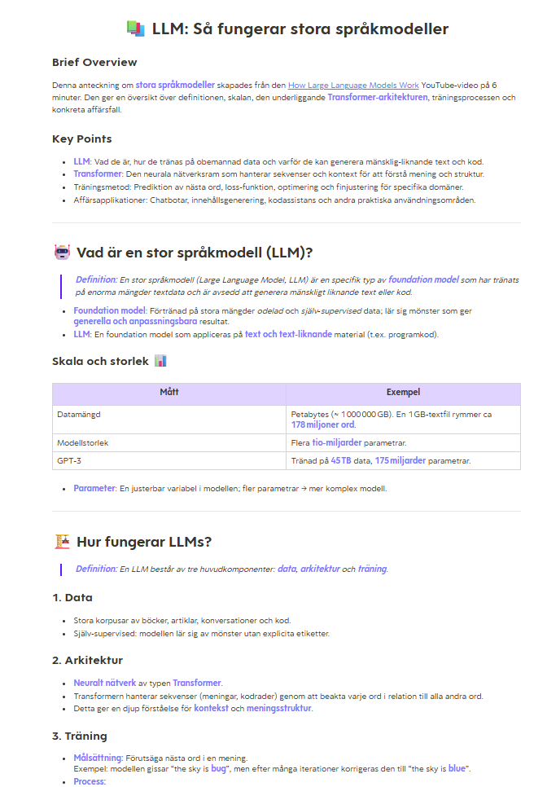
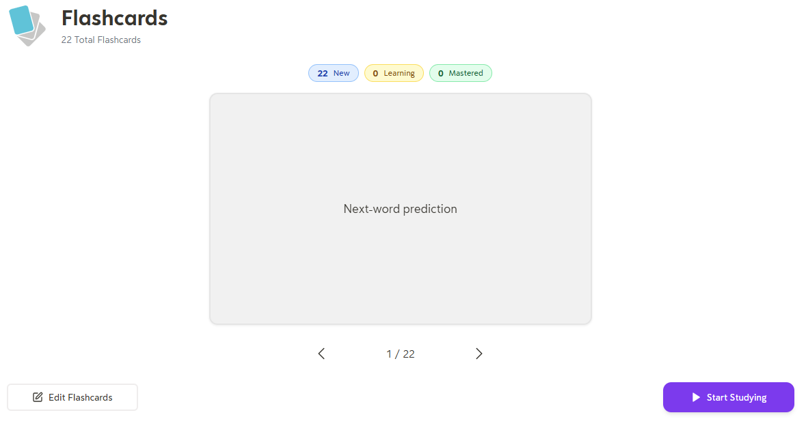
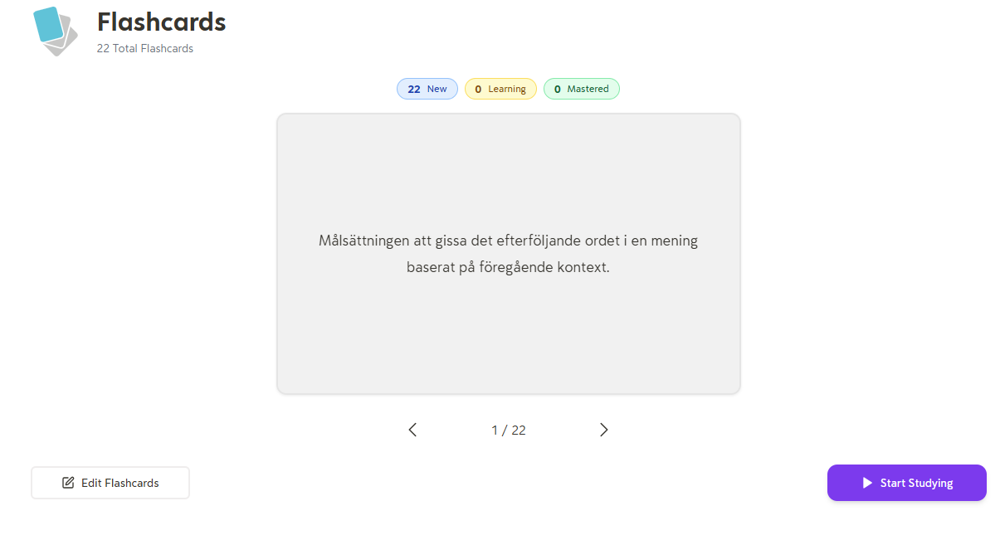
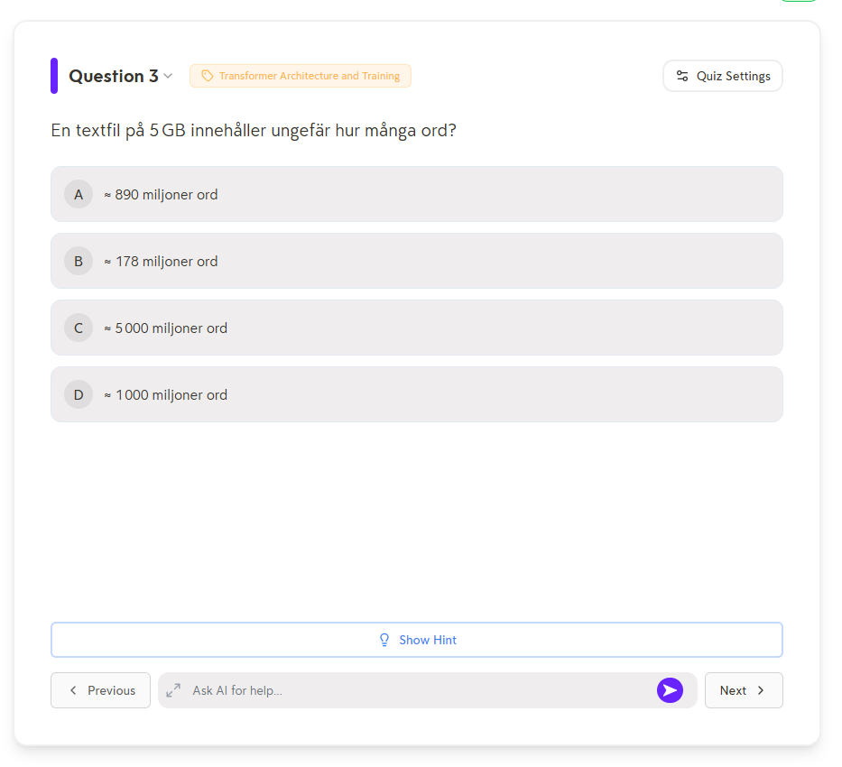
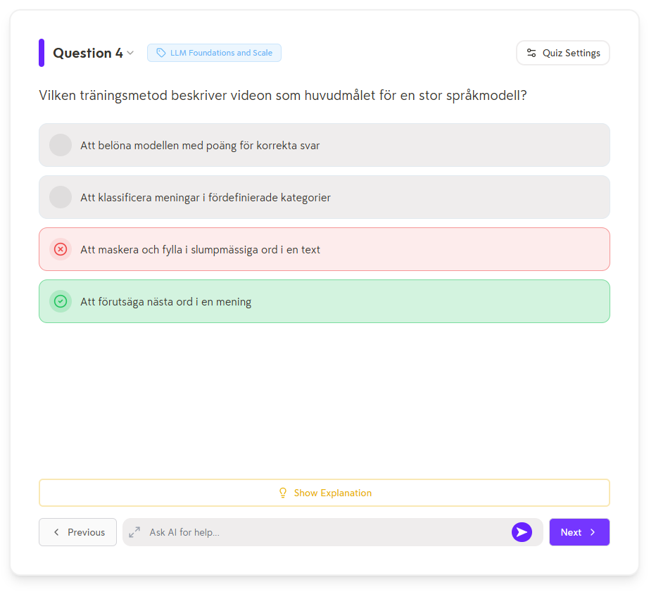
Min slutliga analys
Turbo AI visade tydligt hur effektivt AI kan vara som studiestöd. Verktyget sparade mycket tid eftersom jag snabbt fick anteckningar, flashcards och quiz utan att behöva skapa allt själv. Strukturen var logisk och gjorde det lättare att repetera innehållet.
Samtidigt märkte jag att kvaliteten ibland var begränsad. Vissa flashcards var väldigt enkla och byggde direkt på materialet, vilket gör att de inte alltid tränar förståelsen på djupet. Quizet hade också frågor som ibland var lika varandra, vilket minskade variationen.
En viktig reflektion är att verktyget främst hjälper till med att strukturera och repetera information. Det ersätter inte behovet av att själv förstå och bearbeta innehållet. Det finns därför en risk att man blir för beroende av AI om man inte samtidigt arbetar aktivt med materialet själv.
Min slutsats är att Turbo AI är ett mycket effektivt komplement till studier, men att det fungerar bäst tillsammans med eget aktivt lärande.